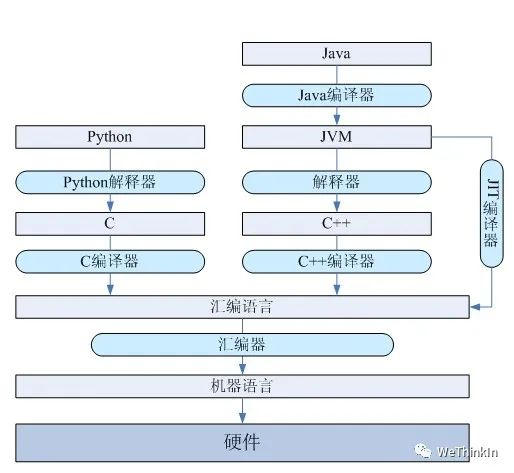
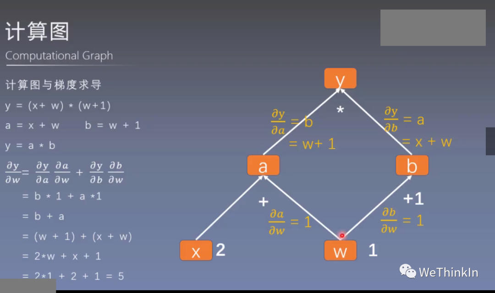

Python基础知识高频考点
created: 2025-01-25T00:41 updated: 2025-01-26T02:20
目录
- 1.Python是解释语言还是编译语言？
- 2.Python里有多线程吗？
- 3.Python中range和xrange的区别？
- 4.Python中列表和元组的区别？
- 5.Python中dict（字典）的底层结构？
- 6.常用的深度学习框架有哪些，都是哪家公司开发的？
- 7.PyTorch动态图和TensorFlow静态图的区别？
- 8.Python中assert的作用？
- 9.Python中互换变量有不用创建临时变量的方法吗？
- 10.Python中的主要数据结构都有哪些？
- 11.Python中的可变对象和不可变对象？
- 12.Python中None代表什么含义？
- 13.Python中的实例方法、静态方法和类方法三者区别？
- 14.Python中常见的切片操作
- 15.Python中如何进行异常处理？
- 16.Python中remove，del以及pop之间的区别？
- 17.Python中PIL和OpenCV处理图像的区别？
- 18.Python中全局变量与局部变量之间的区别？
- 19.Python中
if "__name__" == __main__'的作用? - 20.Python中assert的作用?
- 21.python中如何无损打开图像，并无损保存图像?
- 22.PyTorch中张量操作Clone与Detach的区别?（腾讯实习二面）
- 23.Python多进程中的fork和spawn模式有什么区别？
- 24.什么是Python中的推导式？Python的推导式一共有多少种？
- 25.python中一共都有哪些数据结构？
- 26.python中index使用注意事项
- 27.Python中函数传参时会改变参数本身吗？
- 28.什么是python的全局解释器锁GIL？
- 29.什么是python的字符串格式化技术？
- 30.Python中is和==的区别？
- 31.Python中type()和isinstance()的区别？
- 32.Python中switch-case语句的实现？
- 33.介绍一下Python中耦合和解耦的代码设计思想
- 34.Python中的函数参数有哪些类型与规则？
- 35.什么是Python中的魔术方法?
- 36.介绍一下Python中常用的标准库以及功能
- 37.python中有哪些内建数据类型？
- 38.python中文件有哪些打开模式，它们的区别是什么？
- 39.python中eval函数的作用？
- 40.python中海象运算符的介绍
1.Python是解释语言还是编译语言？
Python是解释语言。
解释语言的优点是可移植性好，缺点是运行需要解释环境，运行起来比编译语言要慢，占用的资源也要多一些，代码效率低。
编译语言的优点是运行速度快，代码效率高，编译后程序不可以修改，保密性好。缺点是代码需要经过编译才能运行，可移植性较差，只能在兼容的操作系统上运行。

2.Python里有多线程吗？
Python里的多线程是假的多线程。
Python解释器由于设计时有GIL全局锁，导致了多线程无法利用多核，只有一个线程在解释器中运行。
对于I/O密集型任务，Python的多线程能起到作用，但对于CPU密集型任务，Python的多线程几乎占不到任何优势，还有可能因为争夺资源而变慢。
对所有面向I/O的（会调用内建的操作系统C代码的）程序来说，GIL会在这个I/O调用之前被释放，以允许其它的线程在这个线程等待I/O的时候运行。
如果是纯计算的程序，没有 I/O 操作，解释器会每隔 100 次操作就释放这把锁，让别的线程有机会执行（这个次数可以通过 sys.setcheckinterval 来调整）如果某线程并未使用很多I/O 操作，它会在自己的时间片内一直占用处理器和GIL。
缓解GIL锁的方法：多进程和协程（协程也只是单CPU，但是能减小切换代价提升性能）
3.Python中range和xrange的区别？
首先，xrange函数和range函数的用法完全相同，不同的地方是xrange函数生成的不是一个list对象，而是一个生成器。
要生成很大的数字序列时，使用xrange会比range的性能优很多，因为其不需要一上来就开辟很大的内存空间。
Python 2.7.15 | packaged by conda-forge | (default, Jul 2 2019, 00:42:22)
[GCC 4.2.1 Compatible Clang 4.0.1 (tags/RELEASE_401/final)] on darwin
Type "help", "copyright", "credits" or "license" for more information.
>>> range(10)
[0, 1, 2, 3, 4, 5, 6, 7, 8, 9]
>>> xrange(10)
xrange(10)
>>> list(xrange(10))
[0, 1, 2, 3, 4, 5, 6, 7, 8, 9]
xrange函数和range函数一般都用在循环的时候。具体例子如下所示：
>>> for i in range(0,7):
... print(i)
...
0
1
2
3
4
5
6
>>> for i in xrange(0,7):
... print(i)
...
0
1
2
3
4
5
6
在Python3中，xrange函数被移除了，只保留了range函数的实现，但是此时range函数的功能结合了xrange和range。并且range函数的类型也发生了变化，在Python2中是list类型，但是在Python3中是range序列的对象。
4.Python中列表和元组的区别？
-
列表是可变的，在创建之后可以对其进行任意的修改。
-
元组是不可变的，元组一旦创建，便不能对其进行更改，可以元组当作一个只读版本的列表。
-
元组无法复制。
-
Python将低开销的较大的块分配给元组，因为它们是不可变的。对于列表则分配小内存块。与列表相比，元组的内存更小。当你拥有大量元素时，元组比列表快。
5.Python中dict（字典）的底层结构？
Python的dict（字典）为了支持快速查找使用了哈希表作为底层结构，哈希表平均查找时间复杂度为O(1)。CPython 解释器使用二次探查解决哈希冲突问题。
6.常用的深度学习框架有哪些，都是哪家公司开发的？
-
PyTorch：Facebook
-
TensorFlow：Google
-
Keras：Google
-
MxNet：Dmlc社区
-
Caffe：UC Berkeley
-
PaddlePaddle：百度
7.PyTorch动态图和TensorFlow静态图的区别？
PyTorch动态图：计算图的运算与搭建同时进行；其较灵活，易调节。
TensorFlow静态图：计算图先搭建图，后运算；其较高效，不灵活。

8.Python中assert的作用？
Python中assert（断言）用于判断一个表达式，在表达式条件为$false$的时候触发异常。
断言可以在条件不满足程序运行的情况下直接返回错误，而不必等待程序运行后出现崩溃的情况。
Rocky直接举一些例子：
>>> assert True
>>> assert False
Traceback (most recent call last):
File "<stdin>", line 1, in <module>
AssertionError
>>> assert 1 == 1
>>> assert 1 == 2
Traceback (most recent call last):
File "<stdin>", line 1, in <module>
AssertionError
>>> assert 1 != 2
9.Python中互换变量有不用创建临时变量的方法吗？
在Python中，当我们想要互换两个变量的值或将列表中的两个值交换时，我们可以使用如下的格式进行，不需要创建临时变量：
x, y = y, x
这么做的原理是什么呢？
首先一般情况下Python是从左到右解析一个语句的，但在赋值操作的时候，因为是右值具有更高的计算优先级，所以需要从右向左解析。
对于上面的代码，它的执行顺序如下：
先计算右值$y , x$(这里是简单的原值，但可能会有表达式或者函数调用的计算过程)， 在内存中创建元组(tuple)，存储$y, x$分别对应的值；计算左边的标识符，元组被分别分配给左值，通过解包(unpacking)，元组中第一个标示符对应的值$(y)$，分配给左边第一个标示符$(x)$，元组中第二个标示符对应的值$(x)$，分配给左边第二个标示符$(y)$，完成了$x$和$y$的值交换。
10.Python中的主要数据结构都有哪些？
- 列表（list）
- 元组（tuple）
- 字典（dict）
- 集合（set）
11.Python中的可变对象和不可变对象？
可变对象与不可变对象的区别在于对象本身是否可变。
可变对象：list（列表） dict（字典） set（集合）
不可变对象：tuple（元组） string（字符串） int（整型） float（浮点型） bool（布尔型）
12.Python中None代表什么含义？
在 Python 中，None 是一个特殊的常量，表示 “没有值” 或 “空值” 。它通常用来表示以下几种场景：
- 一个函数没有显式返回值。
- 一个变量的值尚未被定义。
- 用来表示某种占位符意义的“无”值。
通过合理使用 None，可以提高代码的可读性和鲁棒性。
1. None 是什么？
核心概念
None是一个对象：None是 Python 的内建常量，属于NoneType类型。- 唯一性：在整个程序运行中，
None是全局唯一的对象。 - 不可变性：
None是不可变的，不能修改其值。
代码示例
print(type(None)) # 输出: <class 'NoneType'>
# 比较 `None` 的唯一性
a = None
b = None
print(a is b) # 输出: True (a 和 b 指向同一个 None 对象)
2. None 的常见用法
用法 1：函数无返回值时默认返回 None
- 如果一个函数没有显式
return语句，或return不带值，则该函数默认返回None。
代码示例
def no_return_function():
pass
result = no_return_function()
print(result) # 输出: None
用法 2：表示空值或占位符
- 当一个变量还没有赋予实际的值时，可以用
None表示占位。 - 它在对象初始化或默认参数设置中非常常见。
代码示例
value = None # 表示暂时没有赋值
print(value) # 输出: None
用法 3：函数的默认参数
- 如果函数参数不传递值，可以用
None作为默认值，然后在函数中检测是否需要提供替代值。
代码示例
def process_data(data=None):
if data is None:
data = [] # 如果没有提供 data，初始化为空列表
print(data)
process_data() # 输出: []
process_data([1, 2]) # 输出: [1, 2]
用法 4：表示操作失败或无效
- 在处理异常、查找或数据库查询中，
None可以用来表示未找到结果或操作失败。
代码示例
def find_item(items, target):
for item in items:
if item == target:
return item
return None # 未找到目标，返回 None
result = find_item([1, 2, 3], 4)
print(result) # 输出: None
用法 5：终止循环或递归
- 在递归或循环中，可以用
None来标记终止条件。
代码示例
def countdown(n):
if n == 0:
return None # 递归终止
print(n)
countdown(n - 1)
countdown(5) # 输出: 5, 4, 3, 2, 1
3. 判断 None 的方法
- 判断一个变量是否是
None应使用is运算符，而不是==。 - 原因：
None是一个单例对象，is判断的是两个对象是否是同一个对象，而==判断的是值是否相等。
代码示例
a = None
# 正确判断
if a is None:
print("a 是 None")
# 不推荐，但可行
if a == None:
print("a 等于 None")
4. None 的特性
(1) None 不能用于算术操作
None不能像数字一样参与算术运算。
示例
a = None
# print(a + 1) # 会报错: TypeError: unsupported operand type(s)
(2) None 是假值
- 在布尔上下文中（如条件判断），
None被视为False。
代码示例
a = None
if not a:
print("a 是假值") # 输出: a 是假值
5. None 与其他类型的关系
(1) None 与空字符串、空列表的区别
None表示没有值，而空字符串""和空列表[]表示值是空。
代码示例
a = None
b = ""
c = []
print(a == b) # 输出: False
print(a == c) # 输出: False
print(bool(a), bool(b), bool(c)) # 输出: False, False, False
(2) None 与 False 的区别
None和False都在布尔上下文中表示假，但它们的类型不同。
代码示例
a = None
b = False
print(a == b) # 输出: False
print(type(a), type(b)) # 输出: <class 'NoneType'> <class 'bool'>
13.Python中的实例方法、静态方法和类方法三者区别？
不用@classmethod和@staticmethod修饰的方法为实例方法。在类中定义的方法默认都是实例方法。实例方法最大的特点是它至少要包含一个self参数，用于绑定调用此方法的实例对象，实例方法通常可以用类对象直接调用。
采用@classmethod修饰的方法为类方法。类方法和实例方法相似，它至少也要包含一个参数，只不过类方法中通常将其命名为cls，Python会自动将类本身绑定给cls参数。我们在调用类方法时，无需显式为cls参数传参。
采用@staticmethod修饰的方法为静态方法。静态方法没有类似self、cls这样的特殊参数，因此Python的解释器不会对它包含的参数做任何类或对象的绑定。也正因为如此，类的静态方法中无法调用任何类属性和类方法。
14.Python中常见的切片操作
[:n]代表列表中的第一项到第n项。我们看一个例子：
example = [1, 2, 3, 4, 5, 6, 7, 8, 9, 10]
print(example[:6])
---------结果---------
[1, 2, 3, 4, 5, 6]
[n:]代表列表中第n+1项到最后一项：
example = [1, 2, 3, 4, 5, 6, 7, 8, 9, 10]
print(example[6:])
---------结果---------
[7, 8, 9, 10]
[-1]代表取列表的最后一个元素：
example = [1, 2, 3, 4, 5, 6, 7, 8, 9, 10]
print(example[-1])
---------结果---------
10
[:-1]代表取除了最后一个元素的所有元素：
example = [1, 2, 3, 4, 5, 6, 7, 8, 9, 10]
print(example[:-1])
---------结果---------
[1, 2, 3, 4, 5, 6, 7, 8, 9]
[::-1]代表取整个列表的相反列表：
example = [1, 2, 3, 4, 5, 6, 7, 8, 9, 10]
print(example[::-1])
---------结果---------
[10, 9, 8, 7, 6, 5, 4, 3, 2, 1]
[1:]代表从第二个元素意指读取到最后一个元素：
example = [1, 2, 3, 4, 5, 6, 7, 8, 9, 10]
print(example[1:])
---------结果---------
[2, 3, 4, 5, 6, 7, 8, 9, 10]
[4::-1]代表取下标为4（即第五个元素）的元素和之前的元素反转读取：
example = [1, 2, 3, 4, 5, 6, 7, 8, 9, 10]
print(example[4::-1])
---------结果---------
[5, 4, 3, 2, 1]
15.Python中如何进行异常处理？
一般情况下，在Python无法正常处理程序时就会发生一个异常。异常在Python中是一个对象，表示一个错误。当Python脚本发生异常时我们需要捕获处理它，否则程序会终止执行。
捕捉异常可以使用try，except和finally语句。
try和except语句用来检测try语句块中的错误，从而让except语句捕获异常信息并处理。
try:
6688 / 0
except:
'''异常的父类，可以捕获所有的异常'''
print "0不能被除"
else:
'''保护不抛出异常的代码'''
print "没有异常"
finally:
print "最后总是要执行我"
16.Python中remove，del以及pop之间的区别？
remove，del以及pop都可以用于删除列表、字符串等里面的元素，但是具体用法并不相同。
- remove是剔除第一个匹配的值。
- del是通过索引来删除当中的元素。
- pop是通过索引来删除当中的元素，并且返回该元素；若括号内不添加索引值，则默认删除最后一个元素。
>>> a = [0, 1, 2, 1, 3]
>>> a.remove(1)
>>> a
[0, 2, 1, 3]
>>> a = [0, 1, 2, 1, 3]
>>> del a[1]
[0, 2, 1, 3]
>>> a = [0, 1, 2, 1, 3]
>>> a.pop(1)
1
>>> a
[0, 2, 1, 3]
17.Python中PIL和OpenCV处理图像的区别？
Python中的Pillow/PIL（Python Imaging Library）和OpenCV（Open Source Computer Vision Library）都是强大的图像处理库，但它们各有特点和优势，适用于不同的应用场景。
以下是两者之间的详细对比：
- 数据类型：Pillow读取图像时返回的是PIL.Image.Image类型的对象。而OpenCV读取图像时返回的是NumPy数组。
- 颜色格式：OpenCV默认使用BGR颜色格式读取图像。而Pillow使用的是更常见的RGB格式。
- 应用专长：Pillow主要专注于图像的加载、处理和保存，提供了广泛的图像处理能力，如图像缩放、裁剪、过滤、图像合成等，更加侧重于图像处理的基本操作和图像的IO操作。OpenCV是一个专注于实时计算机视觉的库，它的功能不仅限于图像处理，还包括视频处理、人脸识别、对象检测、复杂图像分析等，适用于需要快速有效处理大量数据的应用。
- 性能和效率：对于高性能的实时计算机视觉任务，OpenCV通常比Pillow表现得更好，因为OpenCV底层使用了优化的C++代码，同时支持多线程和GPU加速。在常规图像处理任务中，Pillow更易于使用，且对于基本的图像处理任务已经足够快，并且易于集成到Python应用中。
总结
Pillow适合于需要处理图像文件、执行基本图像处理任务的应用，而OpenCV适合于需要实施复杂的图像分析、计算机视觉处理或实时视频处理的项目。选择哪个库取决于你的具体需求、项目复杂度以及性能要求。
18.Python中全局变量与局部变量之间的区别？
在Python中，全局变量和局部变量的区别主要体现在变量的作用域、声明位置以及在程序中的可访问性上。理解这些差异有助于我们更好地管理数据的流向和变量的生命周期，防止不必要的编程错误。
全局变量
-
定义与作用域：
- 全局变量是在函数外部定义的，其作用域覆盖了整个代码文件/定义它的模块。
- 在任何函数内部和外部都可以访问全局变量（除非被局部作用域的同名变量遮蔽）。
-
使用场景：
- 当多个函数需要访问同一数据时，可以使用全局变量。
- 用于定义整个应用程序可能需要的配置信息或共享数据。
局部变量
-
定义与作用域：
- 局部变量是在函数内部/代码块中定义的，它只在定义它的函数或代码块内部有效。
- 函数或代码块执行完毕后，局部变量的生命周期结束，它们所占用的内存也随之释放。
-
使用场景：
- 当变量的用途仅限于特定函数或代码块时，应使用局部变量。
- 局部变量有助于保持函数的独立性，使函数更易理解和重用。
-
优势：
- 局部变量避免了函数间的数据交互问题，减少了代码的耦合度。
- 使用局部变量可以提高代码的可读性和维护性。
访问和修改全局变量
在Python中，如果你需要在一个函数内部修改全局变量，你必须使用global这个全局关键字来进行声明：
x = 10 # 全局变量
def update():
global x
x = 20 # 修改全局变量
def print_x():
print(x) # 访问全局变量
update()
print_x() # 输出: 20
如果不使用global全局关键字，对全局变量的修改实际上会创建一个同名的新的局部变量，而不会改变全局变量的值。
19.Python中`if '__name__ == '__main__'`的作用?
在Python中，if __name__ == '__main__'用于确定当前Python脚本是需要被直接运行还是被另一个Python脚本导入。
每个Python脚本中都有__name__这个内置变量，它在脚本被直接运行时被设置为'__main__'。而当其被另一个脚本导入时，__name__ 被设置为脚本的名字。
例如，假设有一个模块 example.py：
def my_function():
print("This function is defined in the module.")
if __name__ == '__main__':
my_function()
当你直接运行 example.py 时，__name__ 会是 '__main__'，所以 my_function() 会被执行。但如果你从另一个模块导入 example.py：
import example
example.my_function() # 调用函数
在这种情况下，__name__ 会是 'example'，所以 if __name__ == '__main__' 块下的代码不会被执行，你只会得到 my_function() 的定义和功能。
20.Python中assert的作用?
在Python中，assert 语句用于断言某个条件是真的。如果条件为真，程序会继续运行；如果条件为假，则会触发一个 AssertionError 异常。这种方式主要用于调试阶段，确保代码在特定条件下正确运行，或用来作为程序内部的自检手段。
assert 语句的基本语法如下：
assert condition, error_message
condition：这是需要检查的表达式，结果应为布尔值。error_message：这是可选的，如果提供，当条件不满足（即为False）时，将显示此错误消息。
使用示例
假设你正在开发一个函数，该函数必须接受正整数作为输入。你可以使用 assert 语句来确保输入是正整数：
def print_inverse(number):
assert number > 0, "The number must be positive"
print(1 / number)
print_inverse(5) # 正常运行
print_inverse(-1) # 抛出 AssertionError: The number must be positive
注意事项
assert语句可以被全局解释器选项-O（优化模式）和其他方法禁用。当Python解释器以优化模式运行时，所有的assert语句都会被忽略。因此，通常不建议在生产代码中使用assert来做输入验证或处理程序的核心逻辑。- 适合使用
assert的场景包括：测试代码的健壮性、检查函数的输入参数是否符合预期。
总之，assert是一个有用的调试工具，可以帮助开发者在开发过程中快速定位问题。
21.python中如何无损打开图像，并无损保存图像?
在Python中，如果我们想无损地打开和保存图像，关键是选择支持无损保存的图像格式，如PNG、TIFF或BMP。使用Python的Pillow库可以方便地处理这种任务。下面Rocky将详细说明如何使用Pillow无损地打开和保存图像。
使用Pillow无损打开和保存图像
-
打开图像：使用
Image.open()函数打开图像文件。这个函数不会修改图像数据，因此打开图像本身是无损的。 -
保存图像：使用
Image.save()函数，并确保选择无损格式，如PNG。
以下是一个具体的示例：
from PIL import Image
# 打开图像文件
img = Image.open('example.jpg') # 假设原始文件是JPEG格式
# 执行一些图像处理操作（可选）
# 注意，确保这些操作是无损的，如大小调整、裁剪等
# 保存图像为PNG格式，这是无损压缩
img.save('output.png', 'PNG')
# 或者用这种方式进行无损保存
img.save('path_to_save_image.png', format='PNG', optimize=True)
注意事项
- PNG使用的是无损压缩算法，这意味着图像的所有信息在压缩和解压过程中都被完整保留，不会有任何质量损失。
- 当从有损压缩格式（如JPEG）转换为无损格式（如PNG）时，虽然保存过程是无损的，但原始从JPEG格式读取的图像可能已经丢失了一些信息。因此，最佳实践是始终从无损格式源文件开始操作，以保持最高质量。
- 如果我们的图像已经在一个无损格式（如PNG），你只需重新保存它，同样选择无损格式，即可保持图像质量不变。
- 无损保存与
optimize=True选项：optimize=True选项会尝试找到更为压缩的存储方式来保存文件，但不会影响图像的质量。具体来说，它在保存文件时会尝试优化图像数据的存储方式，比如重新排列文件中的色块和使用更有效的编码方法，但仍然保持图像数据的完整性和质量。因此，即使使用了optimize=True选项，保存的PNG文件也是无损的，不会有质量损失。这使得PNG格式非常适合需要无损压缩的应用，如需要频繁编辑和保存的图像处理任务。
处理其他图像格式
对于其他格式如TIFF或BMP，Pillow同样支持无损操作，保存方法类似，只需改变保存格式即可：
# 保存为TIFF格式
img.save('output.tiff', 'TIFF')
# 保存为BMP格式
img.save('output.bmp', 'BMP')
使用Pillow库，我们可以轻松地在Python中进行无损图像处理。它提供了广泛的功能，能够处理几乎所有常见的图像格式，并支持复杂的图像处理任务。
22.PyTorch中张量操作Clone与Detach的区别？
clone方法:
创建了张量的一个新的副本，这个副本具有与原始张量相同的数据和形状，但它们是存储在内存中的两个独立实体。对克隆张量的修改不会影响到原始张量。clone通常用于需要保留原始数据不变时创建张量的独立副本。
import torch
x = torch.tensor([1, 2, 3])
y = x.clone() # y 是x的一个副本，对y的修改不会影响到x
detach方法:
从当前的计算图中分离出一个张量，使其成为一个不需要梯度的张量。这意味着，经过detach操作的张量将不会参与梯度传播，不会在反向传播中更新。detach通常用于阻止梯度传播，或者在进行推断时将张量从模型的参数中分离出来。
import torch
x = torch.tensor([1, 2, 3], requires_grad=True)
y = x.detach() # y 不需要梯度，对y的操作不会引起梯度计算
主要区别
目的：clone的目的是创建数据的副本，而detach的目的是分离张量以停止梯度计算。
内存使用：clone会创建数据的一个完整副本，因此会使用更多的内存。detach则不会复制数据，只是创建了一个新的视图，通常不会增加额外的内存使用。
梯度：clone得到的副本可以有与原始张量相同的requires_grad属性，而detach得到的张量总是没有梯度的。
数据一致性：clone创建的是数据的一致副本，对副本的修改不会反映到原始张量上。detach操作的张量与原始张量数据上是一致的，对副本修改会反映原始张量，但不参与梯度计算。
23.Python多进程中的fork和spawn模式有什么区别？
- windows和MacOS中默认为spawn模式，unix系统默认为fork模式，其中windows只支持spawn，unix同时支持两者；
- spawn模式不会继承父进程的资源，而是从头创建一个全新的进程，启动较慢；
- fork模式会继承父进程的资源，即通过复制父进程资源来快速创建子进程，启动较快；
24.什么是Python中的推导式？Python的推导式一共有多少种？
Python中的推导式（comprehensions）是一种简洁、灵活且高效的构建Python数据结构的方法，包括列表、字典、集合和生成器。推导式允许以表达式的形式快速生成新的数据结构，同时在创建过程中可以直接应用条件筛选或操作。下面详细介绍Python中四种主要的推导式：
1. 列表推导式（List Comprehensions）
功能：用于创建列表，可以通过应用表达式自动处理并生成新列表。
基本语法：
[expression for item in iterable if condition]
expression是对item的操作或者应用表达式。item是从iterable中逐个取出的元素。condition是一个可选的条件语句，用于过滤。
示例：
# 生成0-9每个数字的平方的列表
squares = [x**2 for x in range(10)]
# 结果
{0, 1, 64, 4, 36, 9, 16, 49, 81, 25}
2. 字典推导式（Dictionary Comprehensions）
功能：用于创建字典，允许通过迭代可迭代对象来生成键值对。
基本语法：
{key_expression : value_expression for item in iterable if condition}
key_expression表示字典的键的表达式。value_expression表示字典的值的表达式。item是从iterable中逐个取出的元素。condition是一个可选的条件语句，用于过滤。
示例：
# 使用数字作为键，其平方作为值
squares_dict = {x: x**2 for x in range(5)}
# 结果
{0: 0, 1: 1, 2: 4, 3: 9, 4: 16}
3. 集合推导式（Set Comprehensions）
功能：用于创建集合，类似于列表推导式，但结果是一个集合，自动去重。
基本语法：
{expression for item in iterable if condition}
expression是对item的操作或者应用表达式。item是从iterable中逐个取出的元素。condition是一个可选的条件语句，用于过滤。
示例：
# 创建一个包含0-9每个数字平方的集合
square_set = {x**2 for x in range(10)}
# 结果
{0, 1, 64, 4, 36, 9, 16, 49, 81, 25}
4. 生成器推导式（Generator Expressions）
功能：生成器推导式是一种类似于列表推导式的结构，用于创建生成器（一种迭代器），不会一次性生成所有元素，而是按需产生，节约内存。
基本语法：
(expression for item in iterable if condition)
expression是对item的操作或者应用表达式。item是从iterable中逐个取出的元素。condition是一个可选的条件语句，用于过滤。
示例：
# 创建一个生成器，包含0-9每个数字的平方
square_gen = (x**2 for x in range(10))
# 结果
<generator object <genexpr> at 0x7f0827a98660>
推导式提供了一种高效和直观的方式来创建数据结构，使代码更加简洁易读。在合适的情况下，使用推导式可以有效提升编程效率和执行性能。
25.python中一共都有哪些数据结构？
Python提供了一系列内置的数据结构，这些数据结构非常强大和灵活，可以用来处理各种不同类型的数据。这些数据结构包括列表、元组、字典、集合，以及通过标准库可用的更多高级数据结构如队列和堆。下面是这些主要数据结构的详细介绍：
1. 列表（List）
列表是Python中最常用的数据结构之一，它是一个有序的集合，可以包含任何类型的对象：数字、字符串、甚至其他列表。列表是可变的，这意味着它们可以被修改。
基本操作：
- 创建列表：
my_list = [1, 2, 3] - 添加元素：
my_list.append(4) - 删除元素：
del my_list[0] - 切片操作：
my_list[1:3]
2. 元组（Tuple）
元组与列表类似，但它们是不可变的。这意味着一旦创建了元组，就不能修改其内容。元组通常用于保护数据不被更改，并且可以作为字典键使用，而列表则不能。
基本操作：
- 创建元组：
my_tuple = (1, 2, 3) - 访问元素：
my_tuple[1] - 切片操作：
my_tuple[1:2]
3. 字典（Dictionary）
字典是一种关联数组或哈希表，它由键值对组成。字典中的键必须是唯一的，并且必须是不可变类型，如字符串或元组。字典在查找、添加和删除操作上非常高效。
基本操作：
- 创建字典：
my_dict = {'key': 'value'} - 访问元素：
my_dict['key'] - 添加或修改元素：
my_dict['new_key'] = 'new_value' - 删除元素：
del my_dict['key']
4. 集合（Set）
集合是一个无序的元素集，提供了强大的成员测试和删除重复元素的功能。集合中的元素必须是不可变类型，并且集合本身是可变的。
基本操作：
- 创建集合：
my_set = {1, 2, 3} - 添加元素：
my_set.add(4) - 删除元素：
my_set.remove(2) - 成员测试：
1 in my_set
高级数据结构
Python的标准库还提供了一些高级数据结构，这些结构在collections模块和其他模块中定义。
队列（Queue）
队列是一种先进先出的数据结构，标准库中的queue.Queue用于多线程编程中的线程安全的队列操作。
双端队列（Deque）
collections.deque提供了一个双端队列，支持从任一端添加或删除元素的高效操作。
计数器（Counter）
collections.Counter是一个简单的计数器，用于计数可哈希对象。
有序字典（OrderedDict）
collections.OrderedDict是一个保持元素插入顺序的字典。
堆（Heap）
模块heapq提供了堆队列算法，特别是优先级队列的实现。
这些数据结构使Python在处理各种数据时变得非常灵活和强大。选择正确的数据结构可以显著提高程序的效率和性能。
26.python中index使用注意事项
作用
Python list.index方法返回某一个值的元素位于列表中的索引。
语法和参数
list.index(element, start, end)
element:要查询的元素值，不可省略的参数，可以是任意类型的对象实例
start:可选整型参数，查找的起始位置。
end:可选整型参数，查找的结束位置。
返回值：int类型，参数在list中的索引（*靠近表头的索引）
注意事项： 当查询参数在列表中存在多个，index方法只会返回靠近表头的索引，即第一次查到的参数，并不会将所有匹配值的索引全部返回。 在无法确定列表中元素是否重复的情况下，不建议使用此方法查询索引，建议使用range(len(list))的方法。
27.Python中函数传参时会改变参数本身吗？
在Python中，函数传参是否会改变参数本身取决于参数的数据类型和传递方式。这涉及到Python的参数传递机制，通常被称为“传引用的值”（pass-by-reference value）或者“传对象引用”（pass-by-object-reference）。这里的一些基本规则和示例将帮助大家理解这一概念：
可变与不可变对象
-
不可变对象：包括整数、浮点数、字符串、元组等。这些类型的数据不允许被修改。
- 当我们传递一个不可变对象给函数时，虽然函数内部可以使用这个对象的值，但任何试图改变该对象的操作都将在本地创建一个新对象。外部原始对象不会被改变。
def modify(x): x = 10 return x a = 5 modify(a) print(a) # 输出 5，原始值未改变 -
可变对象：包括列表、字典、集合等。这些类型的数据可以被修改。
- 当你传递一个可变对象给函数时，函数内部对这个对象的任何修改都会反映到原始对象上。
def modify(lst): lst.append(3) my_list = [1, 2] modify(my_list) print(my_list) # 输出 [1, 2, 3]，原始列表被修改
函数参数的工作方式
- 在Python中，所有的函数参数都是按“引用传递”的。但实际上，这意味着当对象传递给函数时，传递的是对象的引用（内存地址），而不是对象的实际拷贝。对于不可变对象，由于不能被改变，所以任何修改都会导致创建一个新的本地对象；而对于可变对象，则可以在原地址上进行修改。
- 对于列表和字典这样的可变对象，如果你不希望函数中的操作影响到原始数据，你可以传递一个拷贝给函数，而不是原始对象本身。
import copy
def modify(lst):
lst.append(3)
original_list = [1, 2]
new_list = copy.deepcopy(original_list)
modify(new_list)
print(original_list) # 输出 [1, 2]
print(new_list) # 输出 [1, 2, 3]
总结
在Python中，函数的行为取决于传入参数的类型。不可变对象（如整数、字符串和元组）不会在函数调用中被修改，而可变对象（如列表和字典）可以被修改。了解这些差异有助于我们更好地管理函数中数据的状态和行为。
28.什么是python的全局解释器锁GIL？
在Python中，全局解释器锁（Global Interpreter Lock，简称GIL）是一个重要的概念，特别是在涉及多线程执行时。GIL 是一个互斥锁，保证同一时间内只有一个线程可以执行Python字节码。简而言之，尽管在多核处理器上运行，Python 的标准实现 CPython 在执行多线程应用时，并不能有效地利用多核处理器的优势。
GIL 的目的
- 简化内存管理：CPython 使用引用计数来管理内存，这种方法在多线程环境中容易产生问题。GIL 通过确保一次只有一个线程运行，避免了常见的并发访问问题，如竞态条件。
- 保护CPython的内部数据结构：没有GIL，程序员必须采用其他并发控制技术，如细粒度锁，这可能会使CPython的实现更复杂。
GIL 的影响
尽管GIL简化了内存管理和内部数据结构的保护，但它也限制了Python程序在多核处理器上的并行执行能力：
- 多线程局限性：在CPU密集型程序中，GIL成为性能瓶颈，因为线程不能在多个CPU核心上同时执行计算任务。
- I/O密集型应用的表现更好：I/O操作不需要大量CPU计算，线程可能会在等待I/O操作完成时释放GIL，从而让其他线程有机会执行。
绕过GIL
虽然GIL在多线程编程中存在局限性，但Python社区提供了多种方法来绕过这些限制：
- 使用多进程：通过
multiprocessing模块，可以创建多个进程，每个进程拥有自己的Python解释器和内存空间，从而不受GIL的限制。 - 使用其他实现：如Jython和IronPython，这些Python实现没有GIL，可以更好地利用多核处理器。
- 使用特定库：一些库设计可以在底层进行多线程或多进程操作，从而绕过GIL的限制，例如NumPy和其他与C语言库交互的扩展。
29.什么是python的字符串格式化技术？
在Python中，字符串格式化是一项重要的技能，能帮助我们高效地生成和处理字符串。Python提供了多种字符串格式化的方法，包括旧式的百分号（%）格式化、新式的str.format()方法以及最新的f-string（格式化字符串字面量）。下面Rocky将详细讲解这些方法，让大家更好地理解。
1. 百分号（%）格式化
这是Python中最古老的字符串格式化方法，使用%符号进行占位符替换。
基本用法：
name = "Alice"
age = 30
formatted_string = "Name: %s, Age: %d" % (name, age)
print(formatted_string) # 输出: Name: Alice, Age: 30
%s用于字符串%d用于整数%f用于浮点数
控制浮点数精度：
pi = 3.14159
formatted_string = "Pi: %.2f" % pi
print(formatted_string) # 输出: Pi: 3.14
2. str.format() 方法
str.format()方法更加灵活和强大，允许指定占位符的位置和格式。
基本用法：
name = "Alice"
age = 30
formatted_string = "Name: {}, Age: {}".format(name, age)
print(formatted_string) # 输出: Name: Alice, Age: 30
使用索引指定占位符的位置：
formatted_string = "Name: {0}, Age: {1}".format(name, age)
print(formatted_string) # 输出: Name: Alice, Age: 30
使用命名参数：
formatted_string = "Name: {name}, Age: {age}".format(name=name, age=age)
print(formatted_string) # 输出: Name: Alice, Age: 30
控制浮点数精度：
pi = 3.14159
formatted_string = "Pi: {:.2f}".format(pi)
print(formatted_string) # 输出: Pi: 3.14
3. f-string（格式化字符串字面量）
f-string是Python 3.6引入的一种新的格式化方法，提供了简洁和高效的方式。
基本用法：
name = "Alice"
age = 30
formatted_string = f"Name: {name}, Age: {age}"
print(formatted_string) # 输出: Name: Alice, Age: 30
控制浮点数精度：
pi = 3.14159
formatted_string = f"Pi: {pi:.2f}"
print(formatted_string) # 输出: Pi: 3.14
字符串格式化技术的应用场景
- 日志记录：格式化日志信息以便调试和分析。
- 数据输出：生成报告或导出数据。
- 用户界面：动态显示信息。
30.Python中is和==的区别
Python 中，对于任意的变量都具有三个基本要素：分别是 id，type，value。其中 id 为身份标识，即唯一能识别变量的标志，type 为数据类型，value 为数据值。在定义变量之后，可以看到这几个基本要素：
>>> a = 1
>>> id(a)
1779264528
>>> type(a)
<class 'int'>
>>> a
1
id(): 在Python中变量创建的时候，会为其分配一个内存地址，id()返回的是变量的内存地址。
is比较的是对象，即id()，==比较的是值；在Python中，整型对象和字符串对象是不可变对象，Python 会很高效地对它们进行缓存,这两个类型变量具有相同value时，id也是相等的。
>>> a = 1
>>> b = 1
>>> a == b
True
>>> a is b
True
>>> a = "a"
>>> b = "a"
>>> a == b
True
>>> a is b
True
31.Python中type()和isinstance()的区别？
type() 函数用于获取对象的类型，返回对象的类型对象。它还可以用于动态创建类。
# 获取对象类型
x = 42
print(type(x)) # 输出: <class 'int'>
# 动态创建类
MyDynamicClass = type('MyDynamicClass', (), {'x': 42})
obj = MyDynamicClass()
print(obj.x) # 输出: 42
- type() 返回对象的类型对象，例如 <class 'int'>。
- type() 主要用于获取对象的类型，以及在动态创建类时使用。
- type() 不考虑继承关系，仅比较确切的类型。 isinstance() 函数用于判断一个对象是否是一个已知的类型，返回 True 或 False。
# 判断对象类型
x = 42
print(isinstance(x, int)) # 输出: True
# 判断对象是否属于多个类型中的任意一个
y = "Hello"
print(isinstance(y, (int, float, str))) # 输出: True
- isinstance() 返回布尔值，表示对象是否是指定类型或类型元组中任意类型的实例。
- isinstance() 主要用于判断对象是否是指定类型，适用于检查对象是否属于某一类或其子类。
- isinstance() 考虑继承关系，如果对象是指定类型或其子类的实例，返回 True
32.Python中switch-case语句的实现？
在Python3.10中引入了新的match-case语法，它是一种用于模式匹配的结构。它类似于 switch-case 语句，可以根据不同的模式匹配执行不同的代码块。
- 常量匹配
match x:
case 0:
print("0")
case 1:
print("1")
case _:
print("_")
- 变量匹配
match x:
case 'a':
print("变量为'a'")
case n:
print("变量为{}".format(n))
case _:
print("其他情况")
- 类型匹配
match value:
case str_val as str:
print("字符串类型")
case int_val as int:
print("整数类型")
case _:
print("其他类型")
- 结构化匹配
class Point:
def __init__(self, x, y):
self.x = x
self.y = y
p = Point(1, 2)
match p:
case Point(0, 0):
print("原点")
case Point(x, 0):
print(f"在 x 轴上，x 坐标为{x}")
case Point(0, y):
print(f"在 y 轴上，y 坐标为{y}")
case Point(x, y):
print(f"在坐标系中，坐标为({x}, {y})")
- 区间匹配
match value:
case 0..10:
print("值在 0 到 10 之间")
case 11..20:
print("值在 11 到 20 之间")
case _:
print("值在其他区间")
case 后面的模式使用了区间表示。0..10 表示闭区间，包括 0 和 10；11..20 同样是闭区间，包括 11 和 20。如果匹配成功，相应的代码块将被执行。
需要注意的是，在区间匹配中，左边界必须小于或等于右边界。如果不满足这个条件，将会引发 SyntaxError 错误。
区间匹配也可以与其他类型的匹配结合使用
match value:
case str_val as str:
print("字符串类型")
case int_val as int:
case 0..10:
print("整数在 0 到 10 之间")
case 11..20:
print("整数在 11 到 20 之间")
case _:
print("其他整数")
case _:
print("其他类型")
示例中，首先匹配原始值的类型，然后再根据整数值的区间进行匹配
match-case和switch-case的不同：
-
模式匹配：match-case 结构支持更灵活的模式匹配，可以匹配常量、变量、类型、结构化数据以及区间。这使得在匹配逻辑更加清晰，并且可以消除大量的连续的 if-elif 语句。
-
穿透：在 switch-case 语句中，一旦匹配到某个 case，默认会从匹配的 case 开始执行代码块，并且在每个 case 结束后终止整个 switch 结构。而在 match-case 结构中，默认是不会穿透的，也就是说只会执行匹配成功的 case 对应的代码块，并在执行完后立即退出 match-case 结构，不会执行其他 case 对应的代码块。
-
缺省情况：在 match-case 结构中可以使用 _ 作为默认模式，用于处理无法匹配到其他模式的情况。而在 switch-case 结构中，如果没有匹配到任何 case，需要自己另外处理这种情况。
-
可迭代对象：在 match-case 结构中，可以使用 match 对可迭代对象进行解构匹配，匹配其中的每个元素。而在 switch-case 结构中，需要手动遍历可迭代对象进行匹配。
33.介绍一下Python中耦合和解耦的代码设计思想
在AI行业的Python使用中，耦合和解耦的思想是设计良好的AI算法系统的重要原则。耦合（coupling）指的是模块或组件之间的依赖关系，而解耦（decoupling）指的是减少或消除这种依赖性，使AI算法系统的各部分可以独立开发、测试和维护。以下是Rocky总结的关于 Python中耦合和解耦的详细方法（使用依赖注入、接口和抽象类、事件驱动架构等），提高AI算法系统的灵活性、可维护性和可扩展性。
1. 耦合（Coupling）
耦合表示不同模块或组件之间的依赖关系。当两个模块高度耦合时，一个模块的变化可能会影响另一个模块，导致系统维护和扩展的难度增加。耦合有两种主要形式：紧耦合和松耦合。
紧耦合
紧耦合是指模块之间的依赖性很强，任何一个模块的变化都会导致其他模块的变化。紧耦合系统难以维护和扩展。
示例：
class Database:
def connect(self):
print("Connecting to the database")
class UserService:
def __init__(self):
self.db = Database()
def get_user(self, user_id):
self.db.connect()
print(f"Getting user {user_id}")
user_service = UserService()
user_service.get_user(1)
在这个示例中，UserService 直接依赖于 Database，这使得它们高度耦合。如果 Database 类发生变化，UserService 也需要相应地修改。
2. 解耦（Decoupling）
解耦指的是减少或消除模块或组件之间的依赖关系，使它们能够独立地开发、测试和维护。解耦可以通过以下几种方法实现：
依赖注入（Dependency Injection）
依赖注入（松耦合）是一种设计模式，允许将依赖项从外部传递给一个对象，而不是在对象内部创建依赖项。
示例：
class Database:
def connect(self):
print("Connecting to the database")
class UserService:
def __init__(self, db):
self.db = db
def get_user(self, user_id):
self.db.connect()
print(f"Getting user {user_id}")
db = Database()
user_service = UserService(db)
user_service.get_user(1)
在这个示例中，UserService 不再直接创建 Database 实例，而是通过构造函数接收一个 Database 实例。这减少了模块之间的耦合度。
使用接口和抽象类
通过使用接口或抽象类，可以将具体实现与接口分离，从而实现解耦。
示例：
from abc import ABC, abstractmethod
class DatabaseInterface(ABC):
@abstractmethod
def connect(self):
pass
class Database(DatabaseInterface):
def connect(self):
print("Connecting to the database")
class UserService:
def __init__(self, db: DatabaseInterface):
self.db = db
def get_user(self, user_id):
self.db.connect()
print(f"Getting user {user_id}")
db = Database()
user_service = UserService(db)
user_service.get_user(1)
在这个示例中，Database 实现了 DatabaseInterface 接口，UserService 依赖于 DatabaseInterface 而不是 Database 的具体实现。这种方式提高了系统的灵活性和可维护性。
使用事件驱动架构
事件驱动架构通过事件和消息来解耦模块。模块通过事件总线进行通信，而不需要直接依赖其他模块。
示例：
class EventBus:
def __init__(self):
self.listeners = []
def subscribe(self, listener):
self.listeners.append(listener)
def publish(self, event):
for listener in self.listeners:
listener(event)
class Database:
def connect(self):
print("Connecting to the database")
class UserService:
def __init__(self, event_bus):
self.event_bus = event_bus
self.event_bus.subscribe(self.handle_event)
def handle_event(self, event):
if event == "GET_USER":
self.get_user(1)
def get_user(self, user_id):
db = Database()
db.connect()
print(f"Getting user {user_id}")
event_bus = EventBus()
user_service = UserService(event_bus)
event_bus.publish("GET_USER")
在这个示例中，UserService 通过事件总线 EventBus 进行通信，而不是直接依赖其他模块。这种架构提高了系统的模块化和扩展性。
34.Python中的函数参数有哪些类型与规则？
在Python中，函数的参数有多种类型和一套设定的规则需要遵守，这使得函数定义和调用非常灵活。以下是Python详细的参数规则和类型解释：
1. 位置参数（Positional Arguments）
位置参数是最常见的参数类型，按顺序传递给函数。
def greet(name, age):
print(f"Hello, my name is {name} and I am {age} years old.")
greet("Alice", 30)
2. 关键字参数（Keyword Arguments）
关键字参数允许在函数调用时通过参数名指定参数值，使得参数传递更具可读性，并且不必按顺序传递。
greet(age=30, name="Alice")
3. 默认参数（Default Arguments）
默认参数在函数定义时指定默认值，如果在函数调用时未提供该参数，则使用默认值。
def greet(name, age=25):
print(f"Hello, my name is {name} and I am {age} years old.")
greet("Alice") # 使用默认值25
greet("Bob", 30) # 覆盖默认值
4. 可变位置参数（Variable Positional Arguments）
使用 *args 语法，允许函数接受任意数量的位置参数。 *args 是一个元组。
def greet(*names):
for name in names:
print(f"Hello, {name}!")
greet("Alice", "Bob", "Charlie")
5. 可变关键字参数（Variable Keyword Arguments）
使用 **kwargs 语法，允许函数接受任意数量的关键字参数。 **kwargs 是一个字典。
def greet(**kwargs):
for key, value in kwargs.items():
print(f"{key} is {value}")
greet(name="Alice", age=30, location="Wonderland")
参数顺序规则
在定义函数时，参数应按照以下顺序排列：
- 位置参数
- 关键字参数
- 默认参数
- 可变位置参数
*args - 可变关键字参数
**kwargs
示例
def example(a, b=2, *args, **kwargs):
print(a, b, args, kwargs)
example(1) # 输出: 1 2 () {}
example(1, 3, 4, 5, x=10, y=20) # 输出: 1 3 (4, 5) {'x': 10, 'y': 20}
35.什么是Python中的魔术方法？
在Python类中，以双下划线（__）开头和结尾的方法通常被称为“魔术方法”或“特殊方法”。这些方法定义了类的特殊行为，使类可以与Python的内置操作和函数紧密集成。以下是一些常见且常用的魔术方法：
1. 对象初始化和表示
-
__init__(self, ...)：初始化对象时调用的构造方法。class MyClass: def __init__(self, value): self.value = value -
__repr__(self)：返回对象的官方字符串表示，通常可以用来重新创建该对象。class MyClass: def __repr__(self): return f"MyClass({self.value!r})" -
__str__(self)：返回对象的非正式字符串表示，适合用户友好输出。class MyClass: def __str__(self): return f"Value is {self.value}"
2. 运算符重载
-
__add__(self, other)：定义加法运算符+的行为。class MyClass: def __init__(self, value): self.value = value def __add__(self, other): return MyClass(self.value + other.value) -
__sub__(self, other)：定义减法运算符-的行为。class MyClass: def __sub__(self, other): return MyClass(self.value - other.value) -
__mul__(self, other)：定义乘法运算符*的行为。class MyClass: def __mul__(self, other): return MyClass(self.value * other.value) -
__truediv__(self, other)：定义真除法运算符/的行为。class MyClass: def __truediv__(self, other): return MyClass(self.value / other.value)
3. 比较运算符
-
__eq__(self, other)：定义等于运算符==的行为。class MyClass: def __eq__(self, other): return self.value == other.value -
__lt__(self, other)：定义小于运算符<的行为。class MyClass: def __lt__(self, other): return self.value < other.value -
__gt__(self, other)：定义大于运算符>的行为。class MyClass: def __gt__(self, other): return self.value > other.value
4. 容器类型协议
-
__len__(self)：定义len()函数的行为。class MyClass: def __len__(self): return len(self.value) -
__getitem__(self, key)：定义获取元素的行为，如self[key]。class MyClass: def __getitem__(self, key): return self.value[key] -
__setitem__(self, key, value)：定义设置元素的行为，如self[key] = value。class MyClass: def __setitem__(self, key, value): self.value[key] = value -
__delitem__(self, key)：定义删除元素的行为，如del self[key]。class MyClass: def __delitem__(self, key): del self.value[key]
5. 迭代器协议
-
__iter__(self)：定义返回迭代器的行为。class MyClass: def __iter__(self): return iter(self.value) -
__next__(self)：定义迭代器的下一个元素。class MyClass: def __next__(self): return next(self.value)
6. 可调用对象
__call__(self, ...)：使对象可以像函数一样被调用。class MyClass: def __call__(self, *args, **kwargs): print("Called with", args, kwargs)
这些魔术方法使得类在使用时更加灵活和自然，能够与Python内置的操作和函数无缝衔接。
36.介绍一下Python中常用的标准库以及功能
Python 提供了丰富的标准库，这些库为我们提供了常用的工具和功能，涵盖了从操作系统交互、文件处理、数据序列化、网络通信到多线程编程等方方面面。这些标准库大大简化了我们的工作，使得开发高效、稳定、易于维护的应用程序变得更加容易。在实际项目中，熟练掌握和合理运用这些标准库，可以显著提高我们的开发效率和代码质量。
1. os
- 功能：
os模块提供了一种与操作系统进行交互的便捷方式。我们可以使用它来处理文件和目录、管理环境变量、执行操作系统命令等。 - 常用功能：
os.path: 用于路径操作（如路径拼接、文件名提取）。os.makedirs(): 创建多层目录。os.getenv(): 获取环境变量。os.system(): 执行系统命令。
2. sys
- 功能：
sys模块提供了与 Python 解释器相关的函数和变量，允许我们与解释器进行交互。 - 常用功能：
sys.argv: 命令行参数列表。sys.exit(): 终止程序运行。sys.path: 模块搜索路径列表，可以动态修改。sys.stdout/sys.stderr: 输出流和错误流的重定向。
3. math
- 功能：
math模块提供了基本的数学函数和常量，如三角函数、对数、指数、平方根、常数（如π）等。 - 常用功能：
math.sqrt(): 计算平方根。math.sin(),math.cos(),math.tan(): 三角函数。math.log(): 计算对数（自然对数和其他基数对数）。math.factorial(): 计算阶乘。
4. datetime
- 功能：
datetime模块用于处理日期和时间，支持日期的算术运算、格式化、解析等操作。 - 常用功能：
datetime.date: 表示日期（年、月、日）。datetime.time: 表示时间（时、分、秒、毫秒）。datetime.datetime: 表示日期和时间的组合。datetime.timedelta: 表示两个日期或时间的差。datetime.strftime(): 格式化日期和时间为字符串。datetime.strptime(): 从字符串解析日期和时间。
5. time
- 功能：
time模块提供了与时间相关的函数，如暂停、获取当前时间等。 - 常用功能：
time.time(): 返回当前时间的时间戳（自1970-01-01以来的秒数）。time.sleep(): 让程序暂停指定的时间（秒）。time.localtime(): 将时间戳转换为本地时间的结构体。time.strftime(): 格式化时间为字符串。
6. random
- 功能：
random模块用于生成伪随机数，并提供了随机选择、打乱顺序等功能。 - 常用功能：
random.random(): 返回0到1之间的随机浮点数。random.randint(a, b): 返回a到b之间的随机整数。random.choice(): 从序列中随机选择一个元素。random.shuffle(): 随机打乱序列顺序。random.sample(): 从序列中随机取样。
7. re
- 功能：
re模块提供了正则表达式的支持，允许你在字符串中进行复杂的模式匹配、查找和替换。 - 常用功能：
re.match(): 从字符串的起始位置进行匹配。re.search(): 在字符串中查找模式的首次出现。re.findall(): 查找字符串中所有符合模式的部分。re.sub(): 替换字符串中符合模式的部分。
8. json
- 功能：
json模块提供了将 Python 对象转换为 JSON 格式，以及将 JSON 数据解析为 Python 对象的功能。 - 常用功能：
json.dump(): 将 Python 对象序列化为 JSON 格式，并写入文件。json.dumps(): 将 Python 对象序列化为 JSON 格式的字符串。json.load(): 从文件中读取 JSON 数据并解析为 Python 对象。json.loads(): 将 JSON 字符串解析为 Python 对象。
9. subprocess
- 功能：
subprocess模块允许我们生成子进程，并与其交互，代替旧的os.system()方法。 - 常用功能：
subprocess.run(): 运行命令并等待其完成。subprocess.Popen(): 启动一个子进程，并可以通过stdin,stdout,stderr与其交互。subprocess.call(): 执行命令并返回状态码。
10. collections
- 功能：
collections模块提供了几个有用的容器数据类型，如Counter,deque,defaultdict,namedtuple等。 - 常用功能：
Counter: 用于计数的字典，可以统计元素出现的次数。deque: 双端队列，支持在两端高效地添加和删除元素。defaultdict: 带有默认值的字典。namedtuple: 定义命名元组，可以像对象一样访问元素。
11. itertools
- 功能：
itertools模块提供了用于操作迭代器的函数，用于高效地处理循环和组合生成器等任务。 - 常用功能：
itertools.chain(): 将多个迭代器连接在一起。itertools.cycle(): 无限循环一个迭代器。itertools.permutations(): 生成序列的所有排列。itertools.combinations(): 生成序列的所有组合。itertools.product(): 生成笛卡尔积。
12. functools
- 功能：
functools模块提供了处理和操作函数的工具，支持部分函数应用、缓存、比较等功能。 - 常用功能：
functools.partial(): 创建一个部分应用的函数。functools.lru_cache(): 通过缓存来优化函数性能。functools.reduce(): 累积地将函数应用于序列的元素。
13. threading
- 功能：
threading模块支持多线程编程，允许我们在 Python 中创建和管理线程。 - 常用功能：
threading.Thread(): 创建并启动一个新线程。threading.Lock(): 实现线程间的互斥锁。threading.Event(): 用于线程间通信的同步原语。threading.Timer(): 延迟执行的线程。
14. multiprocessing
- 功能：
multiprocessing模块提供了支持并行处理的功能，通过在多个进程中分配任务来提高计算效率。 - 常用功能：
multiprocessing.Process(): 创建并启动一个新进程。multiprocessing.Pool(): 创建一个进程池，用于并行处理多个任务。multiprocessing.Queue(): 用于进程间通信的队列。multiprocessing.Manager(): 管理共享状态的服务。
15. shutil
- 功能：
shutil模块提供了高级的文件操作功能，如复制、移动、删除文件和目录。 - 常用功能：
shutil.copy(): 复制文件。shutil.move(): 移动文件或目录。shutil.rmtree(): 删除目录及其所有内容。shutil.make_archive(): 创建压缩文件（zip、tar 等）。
16. glob
- 功能：
glob模块用于匹配文件路径名模式，如查找符合特定模式的文件。 - 常用功能：
glob.glob(): 返回符合特定模式的文件路径列表。glob.iglob(): 返回一个迭代器，生成符合模式的文件路径。
17. csv
- 功能：
csv模块提供了读写 CSV 文件的功能，支持多种格式的 CSV 文件操作。 - 常用功能：
csv.reader(): 读取 CSV 文件内容，返回一个可迭代的 reader 对象。csv.writer(): 写入 CSV 文件内容。csv.DictReader(): 以字典的形式读取 CSV 文件。csv.DictWriter(): 以字典的形式写入 CSV 文件。
18. hashlib
- 功能：
hashlib模块提供了用于生成哈希值和摘要的算法，如 SHA-1、SHA-256、MD5 等。 - 常用功能：
hashlib.sha256(): 生成 SHA-256 哈希值。hashlib.md5(): 生成 MD5 哈希值。hashlib.blake2b(): 生成 Blake2b 哈希值。hashlib.sha512(): 生成 SHA-512 哈希值。
19. http
- 功能：
http模块提供了处理 HTTP 请求和响应的功能，包含服务器和客户端相关的工具。 - 常用功能：
http.client: 用于发起 HTTP 请求。http.server: 用于创建简单的 HTTP 服务器。http.cookies: 用于处理 HTTP Cookies。http.HTTPStatus: 枚举 HTTP 状态码。
20. socket
- 功能：
socket模块提供了低级别的网络通信接口，支持 TCP、UDP、IP 等网络协议的编程。 - 常用功能：
socket.socket(): 创建一个套接字对象。socket.bind(): 绑定套接字到地址。socket.listen(): 监听连接。socket.accept(): 接受连接请求。socket.connect(): 连接到远程套接字。
37.python中有哪些内建数据类型？
Python的内建数据类型分为几大类，每一类包含不同的具体数据类型，主要包括：
1. None 类型
NoneType:None是一个特殊的常量，表示空值或无值的对象。用于表示缺少值或空对象。
2. 数值类型
- 整数（int）: 表示整数类型，可以是正数、负数或者零。例如：
42,-5,0。 - 浮点数（float）: 表示带小数点的数字。例如：
3.14,-0.001。 - 复数（complex）: 表示复数，由实部和虚部组成，例如：
3 + 4j。
3. 序列类型
- 字符串（str）: 用于存储文本，使用单引号或双引号定义，例如：
'hello'或"world"。 - 列表（list）: 有序且可变的序列，可以包含不同类型的元素，例如：
[1, 'apple', 3.14]。 - 元组（tuple）: 有序且不可变的序列，可以包含不同类型的元素，例如：
(1, 'apple', 3.14)。 - 范围（range）: 表示一系列数字，常用于循环中，例如：
range(0, 10)。
4. 集合类型
- 集合（set）: 无序且不重复的元素集合，例如：
{1, 2, 3}。 - 冻结集合（frozenset）: 不可变的集合，元素不能被修改，例如：
frozenset([1, 2, 3])。
5. 映射类型
- 字典（dict）: 存储键值对的无序集合，键是唯一的，例如：
{'name': 'Alice', 'age': 25}。
6. 布尔类型
- 布尔值（bool）: 只有两个值
True和False，表示布尔真值。
7. 二进制类型
- 字节（bytes）: 不可变的字节序列，用于处理二进制数据，例如：
b'hello'。 - 字节数组（bytearray）: 可变的字节序列，例如：
bytearray(b'hello')。 - 内存视图（memoryview）: 提供对其他二进制数据类型的访问，例如：
memoryview(b'hello')。
8. 特殊类型
- 可调用对象（callable）: 可以被调用的对象，如函数、方法、类等。
Python 内建数据类型示例
# None
none_type = None
# 数值类型
integer = 10
floating_point = 3.14
complex_number = 2 + 3j
# 序列类型
string = "hello"
list_type = [1, 2, 3]
tuple_type = (1, 2, 3)
range_type = range(5)
# 集合类型
set_type = {1, 2, 3}
frozenset_type = frozenset([1, 2, 3])
# 映射类型
dict_type = {'key': 'value'}
# 布尔类型
boolean = True
# 二进制类型
bytes_type = b'hello'
bytearray_type = bytearray(b'hello')
memoryview_type = memoryview(b'hello')
38.python中文件有哪些打开模式，它们的区别是什么？
在 Python 中，文件操作是通过内建的 open() 函数实现的，而打开文件时可以指定不同的模式来决定如何对文件进行读写操作。这些模式主要控制文件是否是以文本模式或二进制模式打开，文件是否是只读、只写、读写，或者是否从文件末尾追加内容等。
以下是 Python 文件打开模式的种类和区别：
1. 基本打开模式
-
'r'：只读模式（默认模式）- 打开一个文件用于读取。如果文件不存在，则会抛出
FileNotFoundError错误。 - 文件指针会放在文件的开头，文件内容不可写入。
- 适合用于读取文本文件。
f = open('file.txt', 'r') - 打开一个文件用于读取。如果文件不存在，则会抛出
-
'w'：写入模式- 打开一个文件用于写入。如果文件已存在，则会清空文件内容（覆盖原有内容），如果文件不存在，则会创建该文件。
- 文件指针会放在文件的开头。
f = open('file.txt', 'w') -
'a'：追加模式- 打开一个文件用于写入。如果文件不存在，则会创建一个新文件。如果文件存在，则会从文件末尾开始追加内容（不会覆盖文件中的已有数据）。
- 文件指针位于文件末尾。
f = open('file.txt', 'a') -
'x'：独占写入模式- 打开一个文件用于写入。如果文件已存在，则会抛出
FileExistsError错误。这个模式可以避免意外覆盖已存在的文件。
f = open('file.txt', 'x') - 打开一个文件用于写入。如果文件已存在，则会抛出
2. 文本与二进制模式
-
't'：文本模式（默认模式）- 文件以文本形式打开。读取或写入时，处理的是字符串类型（
str）。此模式下，会自动处理文件中的换行符（如\n和\r\n）以适应不同操作系统的换行符格式。
f = open('file.txt', 'rt') # 读取文本文件，等价于 'r' - 文件以文本形式打开。读取或写入时，处理的是字符串类型（
-
'b'：二进制模式- 文件以二进制形式打开。读取或写入时，处理的是字节类型（
bytes）。在处理图片、音频、视频等非文本文件时，通常使用二进制模式。
f = open('file.bin', 'rb') # 读取二进制文件 - 文件以二进制形式打开。读取或写入时，处理的是字节类型（
3. 组合模式
-
'r+'：读写模式- 打开一个文件用于读写。文件必须存在，否则会抛出
FileNotFoundError错误。可以同时读取和写入文件，文件指针位于文件开头。
f = open('file.txt', 'r+') - 打开一个文件用于读写。文件必须存在，否则会抛出
-
'w+'：读写模式（写入）- 打开一个文件用于读写。如果文件存在，则会清空文件内容；如果文件不存在，则会创建新文件。可以同时读取和写入文件。
f = open('file.txt', 'w+') -
'a+'：读写模式（追加）- 打开一个文件用于读写。如果文件不存在，则会创建该文件。如果文件存在，则从文件末尾开始追加内容，但仍可以读取文件中的已有内容。
- 文件指针位于文件末尾。
f = open('file.txt', 'a+') -
'x+'：读写模式（独占创建）- 创建一个文件用于读写。如果文件已存在，则抛出
FileExistsError。同时支持读写操作。
f = open('file.txt', 'x+') - 创建一个文件用于读写。如果文件已存在，则抛出
4. 文件模式总结
| 模式 | 描述 |
|---|---|
'r'
|
只读，文件必须存在 |
'w'
|
写入，文件不存在则创建，存在则覆盖 |
'a'
|
追加写入，文件不存在则创建 |
'x'
|
创建文件并写入，文件存在则抛出错误 |
't'
|
文本模式（默认） |
'b'
|
二进制模式 |
'+'
|
读写模式 |
39.python中eval函数的作用？
语法
eval(expression[, globals[, locals]])
参数：
expression：字符串表达式，表示要执行的 Python 表达式。globals：可选参数，表示全局命名空间，默认为当前全局命名空间。locals：可选参数，表示局部命名空间，默认为当前局部命名空间。
- 求值表达式
>>>x = 7
>>> eval( '3 * x' )
21
>>> eval('pow(2,2)')
4
>>> eval('2 + 2')
4
>>> n=81
>>> eval("n + 4")
85
- 字符串转数据类型
num = eval("42")
print(type(num)) # 输出： <class 'int'>
string = eval("'Hello, World!'")
print(type(string)) # 输出： <class 'str'>
- 执行代码块
code = '''
if x > 5:
print("x is greater than 5")
else:
print("x is not greater than 5")
'''
x = 8
eval(code) # 输出：x is greater than 5
注意事项
eval()函数会执行传入的字符串表达式，并返回表达式的结果。如果传入的字符串包含恶意代码，eval()函数会执行这些代码，可能会带来安全风险。因此，在使用eval()时，需要确保传入的字符串是可信的。eval()函数的globals和locals参数允许指定执行表达式时的全局和局部命名空间。如果不指定这两个参数，eval()函数会在当前的全局和局部命名空间中执行表达式。
40.python中海象运算符的介绍
介绍
Python 3.8 引入了赋值表达式（也称为海象运算符），它允许在表达式中进行赋值操作。赋值表达式的基本语法是 :=，它将右侧的值赋给左侧的变量，并返回该值。
语法
<variable> := <expression>
示例
- 基本用法
if (n := len(a)) > 10:
print(f"List is too long ({n} elements, expected <= 10)")
- 循环中
while (line := file.readline()) != '':
process(line)
- 函数参数
def send_email(address, /, *, subject, message, sender):
"""发送电子邮件"""
# 使用海象运算符来获取用户名和域名
user, domain = address.split('@')
# 发送电子邮件
send_email(user, domain, subject, message, sender)
注意事项
- 赋值表达式可以简化代码，特别是在需要计算和赋值的情况下。